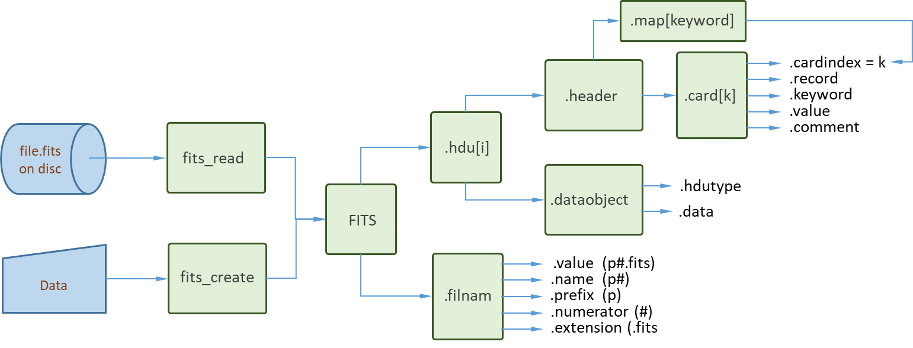

Manual
Introduction
A FITS file (with defining extension .fits) consists of a sequence of one or more Header and Data Units (FITS_HDUs), each containing a FITS_dataobject preceeded by a FITS_header of records with metainformation.
The first HDU in a .fits file is called the PRIMARY HDU. It is an IMAGE HDU, one of the STANDARD HDU types IMAGE, ASCII TABLE and BINTABLE.
Let "example.fits" be an existing .fits file. By the commands
julia> filnam = "example.fits"
"example.fits"
julia> f = fits_read(filnam);we asign the FITS object (read from the .fits file filnam on disc) to the variable f. All information of a given .fits file is stored in the FITS object, its structure is shown in the diagram below.

The fields of f (f.hdu[1], f.hdu[2], ...) correspond to FITS_HDU objects. The PRIMARY HDU of the FITS object is represented by f.hdu[1]. The header records are contained in an array of single-record cards.
The formal terminology of the FITS standard can be consulted using fits_terminology:
julia> fits_terminology("HDU")
HDU:
Header and Data Unit. A data structure consisting of a header and the data the
header describes. Note that an HDU may consist entirely of a header with no
data blocks.The words must, shall, may, recommended, required and optional are to be interpreted as described in the IETF standard - RFC 2119.
Creating a simple FITS file
FITS files can be created using the command fits_create. This process proceeds in two steps: (a) first a FITS object is constructed starting from the data provided (in Julia format); (b) this FITS object is autosaved under the specifified name (e.g., name.fits).
Example:
The minimal file conforming to the FITS standard consists of a single HDU with an empty data field.
julia> filnam = "minimal.fits";
julia> f = fits_create(filnam; protect=false);
julia> fits_info(f)
File: minimal.fits
hdu: 1
hdutype: PRIMARY
DataType: Any
Datasize: (0,)
Metainformation:
SIMPLE = T / file does conform to FITS standard
BITPIX = 64 / number of bits per data pixel
NAXIS = 1 / number of data axes
NAXIS1 = 0 / length of data axis 1
EXTEND = T / FITS dataset may contain extensions
END
Any[]Note how the FITS object is inspected using the fits_info tool.
The FITS_header of a FITS_HDU is contained in an array of single-record FITS_card objects as illustrated in the flow diagram above. To find the cardindex associated with a keyword (e.g., "NAXIS") we can use the header.map:
julia> i = f.hdu[1].header.map["NAXIS"]
3The result is easily verified by inspecting the field card[i].cardindex:
julia> f.hdu[1].header.card[i].cardindex
3Likewise, by inspecting the field card[i].keyword we confirm
julia> f.hdu[1].header.card[i].keyword
"NAXIS"The full record is:
julia> f.hdu[1].header.card[i].record
"NAXIS = 1 / number of data axes "Once ready it is good practice to remove the example:
julia> rm(filnam); f = nothingThe FITS file for a simple image
Rather than inspecting the FITS object directly, CamiFITS offers the fits_info and fits_record_dump tools. To demonstrate these tools we first create a simple image in the form of a 3x3 matrix:
julia> filnam = "matrix.fits";
julia> data = [11,21,31,12,22,23,13,23,33];
julia> data = reshape(data,(3,3,1))
3×3×1 Array{Int64, 3}:
[:, :, 1] =
11 12 13
21 22 23
31 23 33We next create the FITS object for 'data' (our image).
julia> f = fits_create(filnam, data; protect=false);We then inspect the FITS object using the info tool:
julia> fits_info(f)
File: matrix.fits
hdu: 1
hdutype: PRIMARY
DataType: Int64
Datasize: (3, 3, 1)
Metainformation:
SIMPLE = T / file does conform to FITS standard
BITPIX = 64 / number of bits per data pixel
NAXIS = 3 / number of data axes
NAXIS1 = 3 / length of data axis 1
NAXIS2 = 3 / length of data axis 2
NAXIS3 = 1 / length of data axis 3
EXTEND = T / FITS dataset may contain extensions
END
3×3×1 Array{Int64, 3}:
[:, :, 1] =
11 12 13
21 22 23
31 23 33
julia> f = nothingThe keywords NAXIS1, NAXIS2 and NAXIS3 represent the dimensions of the $x, y$ data matrix stacked in the $z$ direction.
The matrix elements are referred to as pixels and their bit size is represented by the keyword BITPIX. In the above example the pixel value is used to indicate the matrix indices, typically it will be an integer representing the gray tone of an image pixel.
Above, the FITS object f was removed from memory but its contents was autosaved under the name filnam = 'matrix.fits'. To access the image data of filnam we can fits_read the FITS object from disk but it is simpler to access the data using fits_info for image processing in Julia:
julia> dataout = fits_info(filnam; msg=false)
3×3×1 Array{Int64, 3}:
[:, :, 1] =
11 12 13
21 22 23
31 23 33
julia> dataout == data
true
julia> rm(filnam); f = data = nothingAt this point the image dataout is available for further processing (e.g. plotting) in julia.
Comment on the casting procedures
Note that the relevant mandatory keywords are autogenerated by fits_create, starting from the Julia datatype and using the FITS object casting procedures, cast_FITS, cast_FITS_filnam, cast_FITS_HDU, cast_FITS_header, cast_FITS_card and cast_FITS_dataobject. Aside from constructing the FITS objects these procedures impose comformance to the FITS standard.
For users primarily interested in image processing, the casting procedures typically remain hidden as they are called internally by fits_create and fits_read.